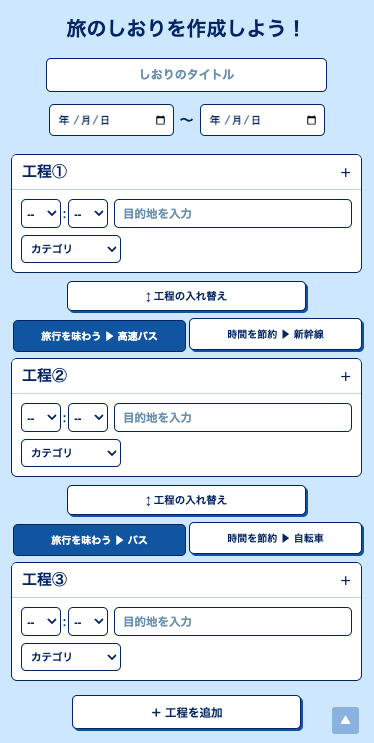
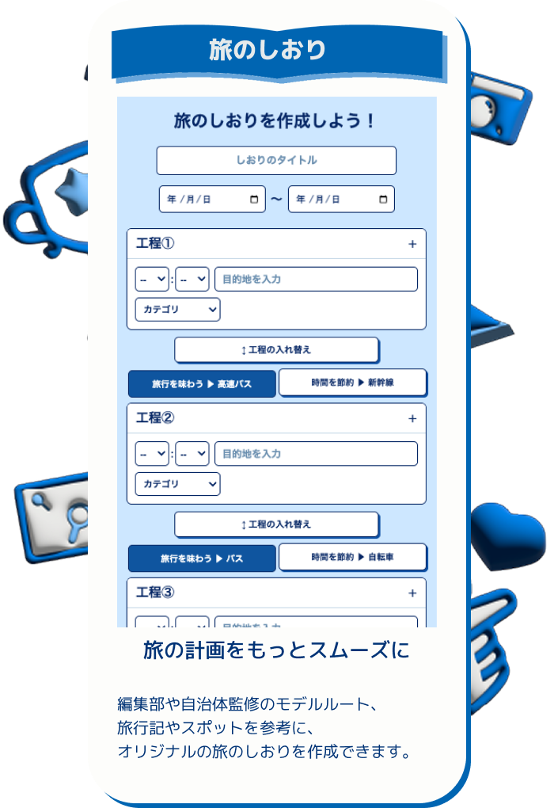
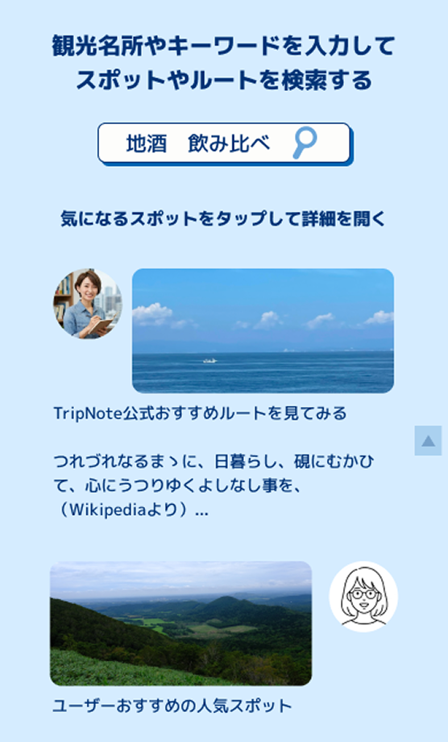
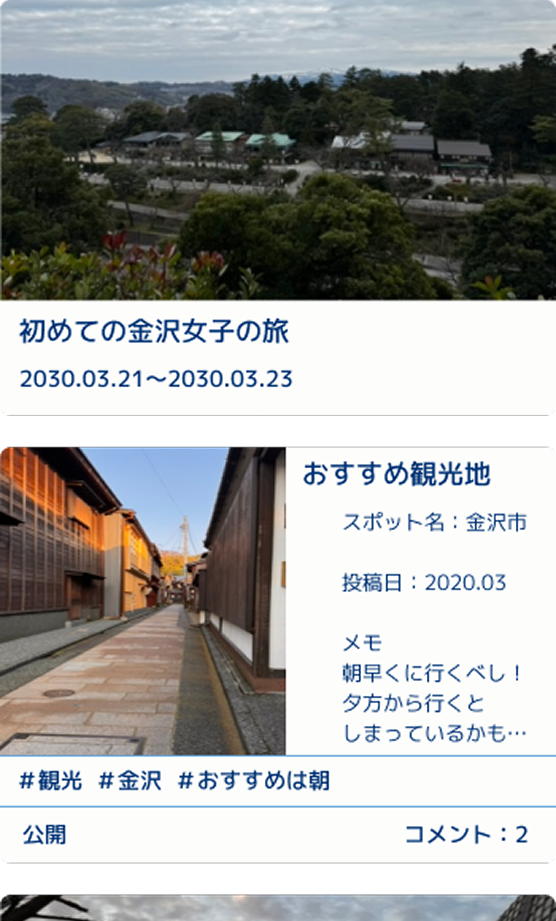
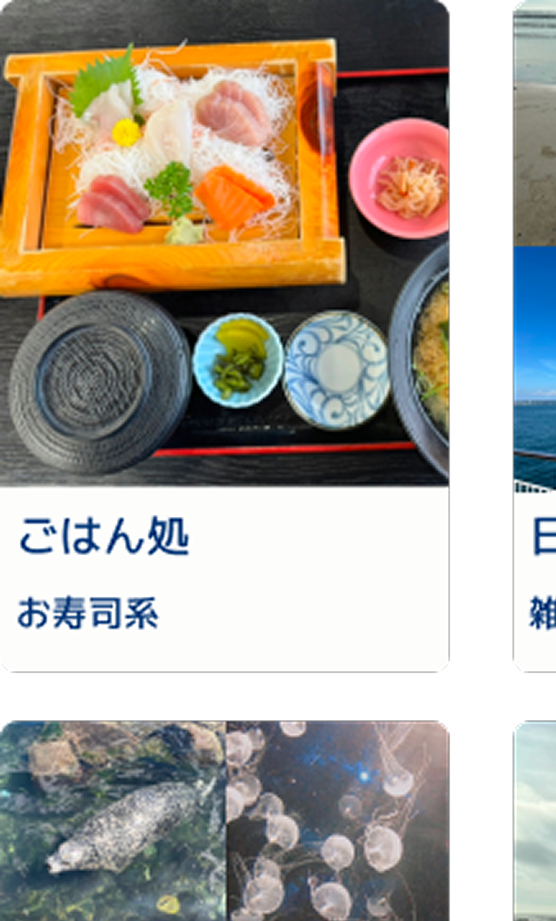
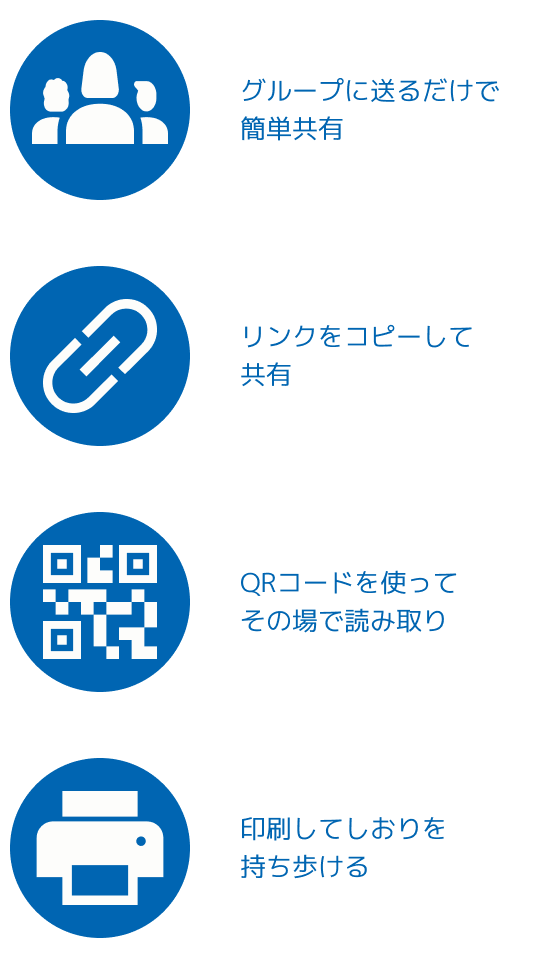
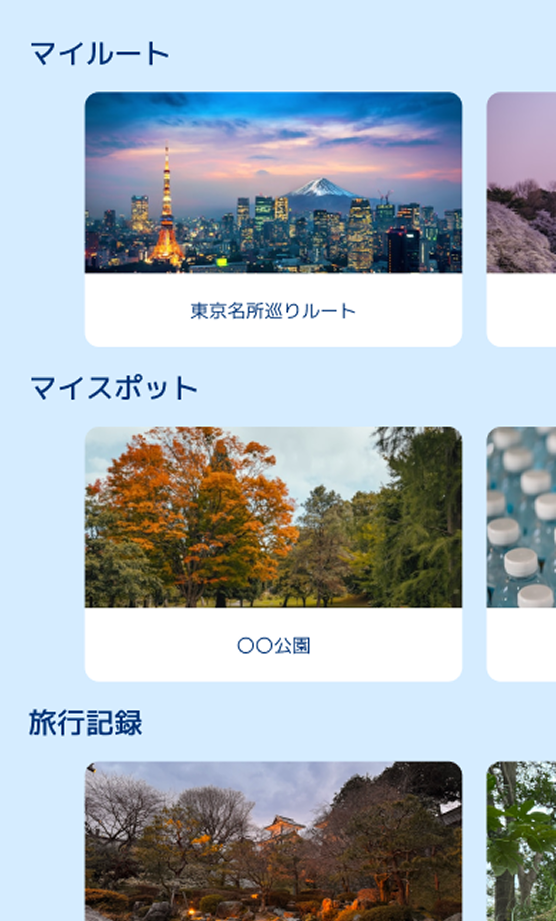

旅の計画をもっとスムーズに
編集部や自治体監修のモデルルート、 旅行記やスポットを参考に、 オリジナルの旅のしおりを作成できます。
Trip Noteと、新しい旅を始めよう。

Trip Noteで旅行前の情報収集や旅程作成、 旅行中の記録、旅行後の思い出整理まで 一つのサイトでまとめよう

編集部や自治体監修のモデルルート、 旅行記やスポットを参考に、 オリジナルの旅のしおりを作成できます。

編集部や自治体が監修したモデルルートや、 ユーザーおすすめの旅行プランを閲覧できます。 気になるスポットは、そのまま自分の旅程に追加できます。

旅行中に撮影した写真やメモを、 その場で記録・保存することができます。 公開範囲も設定できるので、旅行仲間だけに共有したり、 みんなに公開したり、自由に楽しめます。

旅行ごとに写真やメモをまとめてアルバムを作成できます。 旅先での出来事を振り返りながら、 大切な思い出をいつでも残せます。
作成した旅のしおりや旅行記、スポット情報を他のユーザーへ共有できます。 一人旅の記録も、友人との旅行計画も、みんなで気軽にシェアしよう。


気になった旅行記やモデルルート、スポットはお気に入りに保存。 タグやジャンルごとに整理して、自分だけの旅リストを作ることができます。